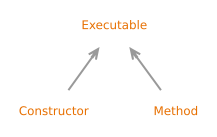

类 Executable
- 所有已实现的接口:
AnnotatedElement, GenericDeclaration, Member
- 直接已知子类:
Constructor, Method
Method
and Constructor.- Sealed Class Hierarchy Graph:

- 自:
- 1.8
{kind=link}
-
字段概要
-
方法概要
修饰符与类型方法描述Returns an unmodifiable set of the access flags for the executable represented by this object, possibly empty.Returns an array ofAnnotatedTypeobjects that represent the use of types to specify the declared exceptions of the method/constructor represented by this Executable.Returns an array ofAnnotatedTypeobjects that represent the use of types to specify formal parameter types of the method/constructor represented by this Executable.Returns anAnnotatedTypeobject that represents the use of a type to specify the receiver type of the method/constructor represented by thisExecutableobject.abstract AnnotatedTypeReturns anAnnotatedTypeobject that represents the use of a type to specify the return type of the method/constructor represented by this Executable.<T extends Annotation>
TgetAnnotation(Class<T> annotationClass) Returns this element's annotation for the specified type if such an annotation is present, else null.<T extends Annotation>
T[]getAnnotationsByType(Class<T> annotationClass) Returns annotations that are associated with this element.Returns annotations that are directly present on this element.abstract Class<?> Returns theClassobject representing the class or interface that declares the executable represented by this object.abstract Class<?>[]Returns an array ofClassobjects that represent the types of exceptions declared to be thrown by the underlying executable represented by this object.Type[]Returns an array ofTypeobjects that represent the exceptions declared to be thrown by this executable object.Type[]Returns an array ofTypeobjects that represent the formal parameter types, in declaration order, of the executable represented by this object.abstract intReturns the Java language modifiers for the executable represented by this object.abstract StringgetName()Returns the name of the executable represented by this object.abstract Annotation[][]Returns an array of arrays ofAnnotations that represent the annotations on the formal parameters, in declaration order, of theExecutablerepresented by this object.abstract intReturns the number of formal parameters (whether explicitly declared or implicitly declared or neither) for the executable represented by this object.Returns an array ofParameterobjects representing all the parameters to the underlying executable represented by this object.abstract Class<?>[]Returns an array ofClassobjects that represent the formal parameter types, in declaration order, of the executable represented by this object.abstract TypeVariable<?>[]Returns an array ofTypeVariableobjects that represent the type variables declared by the generic declaration represented by thisGenericDeclarationobject, in declaration order.booleanReturnstrueif this executable is a synthetic construct; returnsfalseotherwise.booleanReturnstrueif this executable was declared to take a variable number of arguments; returnsfalseotherwise.abstract StringReturns a string describing thisExecutable, including any type parameters.在类 AccessibleObject 中声明的方法
canAccess, getAnnotations, getDeclaredAnnotation, getDeclaredAnnotations, getDeclaredAnnotationsByType, isAccessible, isAnnotationPresent, setAccessible, setAccessible, trySetAccessible
-
方法详情
-
getDeclaringClass
Returns theClassobject representing the class or interface that declares the executable represented by this object.- 指定于:
getDeclaringClassin interfaceMember- 返回:
- an object representing the declaring class of the underlying member
-
getName
-
getModifiers
public abstract int getModifiers()Returns the Java language modifiers for the executable represented by this object.- 指定于:
getModifiersin interfaceMember- 返回:
- the Java language modifiers for the executable represented by this object
- 另见:
-
accessFlags
Returns an unmodifiable set of the access flags for the executable represented by this object, possibly empty.- 指定于:
accessFlagsin interfaceMember- 返回:
- an unmodifiable set of the access flags for the executable represented by this object, possibly empty
- See Java Virtual Machine Specification:
-
4.6 Methods
- 自:
- 20
- 另见:
-
getTypeParameters
Returns an array ofTypeVariableobjects that represent the type variables declared by the generic declaration represented by thisGenericDeclarationobject, in declaration order. Returns an array of length 0 if the underlying generic declaration declares no type variables.- 指定于:
getTypeParametersin interfaceGenericDeclaration- 返回:
- an array of
TypeVariableobjects that represent the type variables declared by this generic declaration - 抛出:
GenericSignatureFormatError- if the generic signature of this generic declaration does not conform to the format specified in The Java Virtual Machine Specification
-
getParameterTypes
Returns an array ofClassobjects that represent the formal parameter types, in declaration order, of the executable represented by this object. Returns an array of length 0 if the underlying executable takes no parameters. Note that the constructors of some inner classes may have an implicitly declared parameter in addition to explicitly declared ones. Also note that compact constructors of a record class may have implicitly declared parameters.- 返回:
- the parameter types for the executable this object represents
-
getParameterCount
public abstract int getParameterCount()Returns the number of formal parameters (whether explicitly declared or implicitly declared or neither) for the executable represented by this object.- 返回:
- The number of formal parameters for the executable this object represents
-
getGenericParameterTypes
Returns an array ofTypeobjects that represent the formal parameter types, in declaration order, of the executable represented by this object. An array of length 0 is returned if the underlying executable takes no parameters. Note that the constructors of some inner classes may have an implicitly declared parameter in addition to explicitly declared ones. Compact constructors of a record class may also have implicitly declared parameters, but they are a special case and thus considered as if they had been explicitly declared in the source. Finally note that as amodeling artifact, the number of returned parameters can differ depending on whether or not generic information is present. If generic information is present, parameters explicitly present in the source or parameters of compact constructors of a record class will be returned. Note that parameters of compact constructors of a record class are a special case, as they are not explicitly present in the source, and its type will be returned regardless of the parameters being implicitly declared or not. If generic information is not present, implicit and synthetic parameters may be returned as well.If a formal parameter type is a parameterized type, the
Typeobject returned for it must accurately reflect the actual type arguments used in the source code. This assertion also applies to the parameters of compact constructors of a record class, independently of them being implicitly declared or not.If a formal parameter type is a type variable or a parameterized type, it is created. Otherwise, it is resolved.
- 返回:
- an array of
Types that represent the formal parameter types of the underlying executable, in declaration order - 抛出:
GenericSignatureFormatError- if the generic method signature does not conform to the format specified in The Java Virtual Machine SpecificationTypeNotPresentException- if any of the parameter types of the underlying executable refers to a non-existent type declarationMalformedParameterizedTypeException- if any of the underlying executable's parameter types refer to a parameterized type that cannot be instantiated for any reason
-
getParameters
Returns an array ofParameterobjects representing all the parameters to the underlying executable represented by this object. An array of length 0 is returned if the executable has no parameters.The parameters of the underlying executable do not necessarily have unique names, or names that are legal identifiers in the Java programming language (JLS 3.8).
- 返回:
- an array of
Parameterobjects representing all the parameters to the underlying executable represented by this object - 抛出:
MalformedParametersException- if the class file contains a MethodParameters attribute that is improperly formatted.
-
getExceptionTypes
Returns an array ofClassobjects that represent the types of exceptions declared to be thrown by the underlying executable represented by this object. Returns an array of length 0 if the executable declares no exceptions in itsthrowsclause.- 返回:
- the exception types declared as being thrown by the executable this object represents
-
getGenericExceptionTypes
Returns an array ofTypeobjects that represent the exceptions declared to be thrown by this executable object. Returns an array of length 0 if the underlying executable declares no exceptions in itsthrowsclause.If an exception type is a type variable or a parameterized type, it is created. Otherwise, it is resolved.
- 返回:
- an array of Types that represent the exception types thrown by the underlying executable
- 抛出:
GenericSignatureFormatError- if the generic method signature does not conform to the format specified in The Java Virtual Machine SpecificationTypeNotPresentException- if the underlying executable'sthrowsclause refers to a non-existent type declarationMalformedParameterizedTypeException- if the underlying executable'sthrowsclause refers to a parameterized type that cannot be instantiated for any reason
-
toGenericString
Returns a string describing thisExecutable, including any type parameters.- 返回:
- a string describing this
Executable, including any type parameters
-
isVarArgs
public boolean isVarArgs()Returnstrueif this executable was declared to take a variable number of arguments; returnsfalseotherwise.- 返回:
trueif this executable was declared to take a variable number of arguments; returnsfalseotherwise
-
isSynthetic
public boolean isSynthetic()Returnstrueif this executable is a synthetic construct; returnsfalseotherwise.- 指定于:
isSyntheticin interfaceMember- 返回:
- true if and only if this executable is a synthetic construct as defined by The Java Language Specification.
- See Java Language Specification:
-
13.1 The Form of a Binary
- See Java Virtual Machine Specification:
-
4.6 Methods
-
getParameterAnnotations
Returns an array of arrays ofAnnotations that represent the annotations on the formal parameters, in declaration order, of theExecutablerepresented by this object. Synthetic and mandated parameters (see explanation below), such as the outer "this" parameter to an inner class constructor will be represented in the returned array. If the executable has no parameters (meaning no formal, no synthetic, and no mandated parameters), a zero-length array will be returned. If theExecutablehas one or more parameters, a nested array of length zero is returned for each parameter with no annotations. The annotation objects contained in the returned arrays are serializable. The caller of this method is free to modify the returned arrays; it will have no effect on the arrays returned to other callers. A compiler may add extra parameters that are implicitly declared in source ("mandated"), as well as parameters that are neither implicitly nor explicitly declared in source ("synthetic") to the parameter list for a method. SeeParameterfor more information.Note that any annotations returned by this method are declaration annotations.
- 返回:
- an array of arrays that represent the annotations on the formal and implicit parameters, in declaration order, of the executable represented by this object
- 另见:
-
getAnnotation
Returns this element's annotation for the specified type if such an annotation is present, else null.Note that any annotation returned by this method is a declaration annotation.
- 指定于:
getAnnotationin interfaceAnnotatedElement- 重写:
getAnnotationin classAccessibleObject- 类型参数:
T- the type of the annotation to query for and return if present- 参数:
annotationClass- the Class object corresponding to the annotation type- 返回:
- this element's annotation for the specified annotation type if present on this element, else null
- 抛出:
NullPointerException- if the given annotation class is null
-
getAnnotationsByType
Returns annotations that are associated with this element. If there are no annotations associated with this element, the return value is an array of length 0. The difference between this method andAnnotatedElement.getAnnotation(Class)is that this method detects if its argument is a repeatable annotation type (JLS 9.6), and if so, attempts to find one or more annotations of that type by "looking through" a container annotation. The caller of this method is free to modify the returned array; it will have no effect on the arrays returned to other callers.Note that any annotations returned by this method are declaration annotations.
- 指定于:
getAnnotationsByTypein interfaceAnnotatedElement- 重写:
getAnnotationsByTypein classAccessibleObject- 类型参数:
T- the type of the annotation to query for and return if present- 参数:
annotationClass- the Class object corresponding to the annotation type- 返回:
- all this element's annotations for the specified annotation type if associated with this element, else an array of length zero
- 抛出:
NullPointerException- if the given annotation class is null
-
getDeclaredAnnotations
Returns annotations that are directly present on this element. This method ignores inherited annotations. If there are no annotations directly present on this element, the return value is an array of length 0. The caller of this method is free to modify the returned array; it will have no effect on the arrays returned to other callers.Note that any annotations returned by this method are declaration annotations.
- 指定于:
getDeclaredAnnotationsin interfaceAnnotatedElement- 重写:
getDeclaredAnnotationsin classAccessibleObject- 返回:
- annotations directly present on this element
-
getAnnotatedReturnType
Returns anAnnotatedTypeobject that represents the use of a type to specify the return type of the method/constructor represented by this Executable. If thisExecutableobject represents a constructor, theAnnotatedTypeobject represents the type of the constructed object. If thisExecutableobject represents a method, theAnnotatedTypeobject represents the use of a type to specify the return type of the method.- 返回:
- an object representing the return type of the method
or constructor represented by this
Executable
-
getAnnotatedReceiverType
Returns anAnnotatedTypeobject that represents the use of a type to specify the receiver type of the method/constructor represented by thisExecutableobject. The receiver type of a method/constructor is available only if the method/constructor has a receiver parameter (JLS 8.4.1). If thisExecutableobject represents an instance method or represents a constructor of an inner member class, and the method/constructor either has no receiver parameter or has a receiver parameter with no annotations on its type, then the return value is anAnnotatedTypeobject representing an element with no annotations. If thisExecutableobject represents a static method or represents a constructor of a top level, static member, local, or anonymous class, then the return value is null.- 返回:
- an object representing the receiver type of the method or
constructor represented by this
Executableornullif thisExecutablecan not have a receiver parameter - See Java Language Specification:
-
8.4 Method Declarations
8.4.1 Formal Parameters
8.8 Constructor Declarations
-
getAnnotatedParameterTypes
Returns an array ofAnnotatedTypeobjects that represent the use of types to specify formal parameter types of the method/constructor represented by this Executable. The order of the objects in the array corresponds to the order of the formal parameter types in the declaration of the method/constructor. Returns an array of length 0 if the method/constructor declares no parameters. Note that the constructors of some inner classes may have an implicitly declared parameter in addition to explicitly declared ones. Also note that compact constructors of a record class may have implicitly declared parameters.- 返回:
- an array of objects representing the types of the
formal parameters of the method or constructor represented by this
Executable
-
getAnnotatedExceptionTypes
Returns an array ofAnnotatedTypeobjects that represent the use of types to specify the declared exceptions of the method/constructor represented by this Executable. The order of the objects in the array corresponds to the order of the exception types in the declaration of the method/constructor. Returns an array of length 0 if the method/constructor declares no exceptions.- 返回:
- an array of objects representing the declared
exceptions of the method or constructor represented by this
Executable
-
Java API 非官方中文翻译项目 · GitHub · 报告此页面的问题或提出改进建议 · 查看完整中文版权声明
中文翻译文本版权 © 2026 本翻译项目贡献者，以 知识共享 署名-相同方式共享 4.0 国际 (CC BY-SA 4.0) 许可证发布。原始英文内容版权归 Oracle 所有，使用受原始许可条款约束。